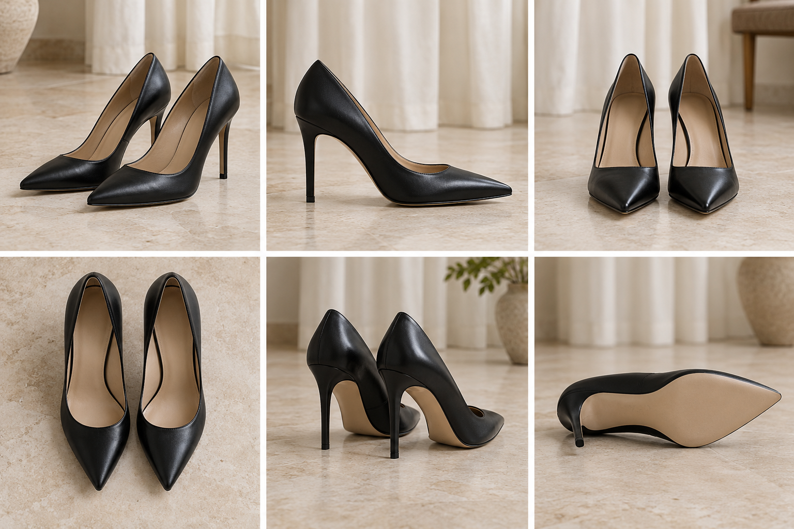
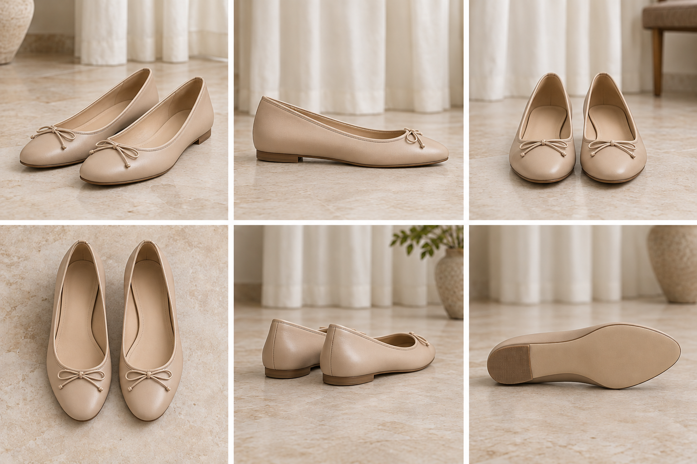
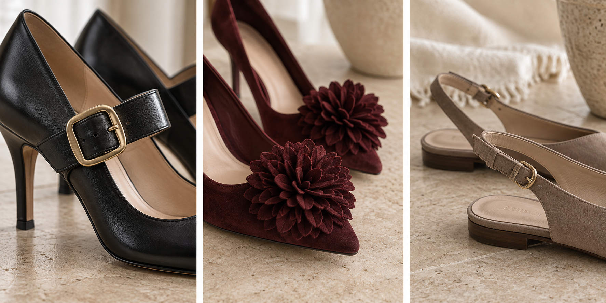

· 01
Luz natural
Utiliza luz natural siempre que puedas. Evita la luz directa y el flash.
Guía para colaboradoras
Te enseñamos cómo fotografiarlos para capturar su silueta, proporciones y detalles.

Antes de empezar
No necesitas equipo profesional. Buscamos imágenes caseras para documentar el calzado tal como es.
Utiliza luz natural siempre que puedas. Evita la luz directa y el flash.
Una pared, el suelo o una tela neutra ayudarán a no robar protagonismo al calzado.
Captura los zapatos sin que queden cortados ni aparezcan demasiado lejos.
Tú eliges: con tu nombre, tu alias en redes o mantener el anonimato.
Si más adelante cambias de opinión, solo tienes que avisarnos por Instagram o por el canal habitual. Retiraremos el par de la web y archivaremos las publicaciones de inmediato.
Registro de ángulos

1 2 3 4 5 6Primeros planos
Puedes enviarnos una fotografía cercana de cualquier elemento que merezca más detalle.

Hebillas metálicas, cordones, cremalleras o lazadas.
Lazos, tachuelas, broches, pompones o combinación de materiales.
Talones abiertos (slingbacks), elásticos o tiras finas.